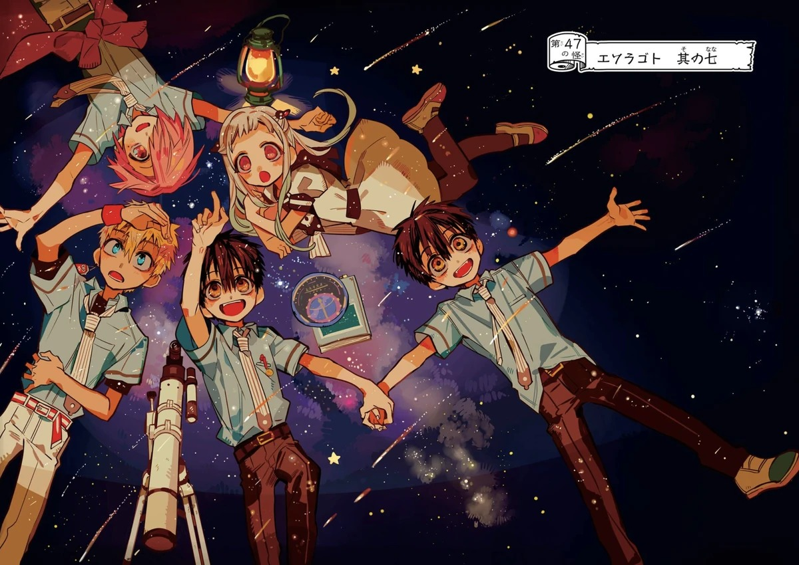
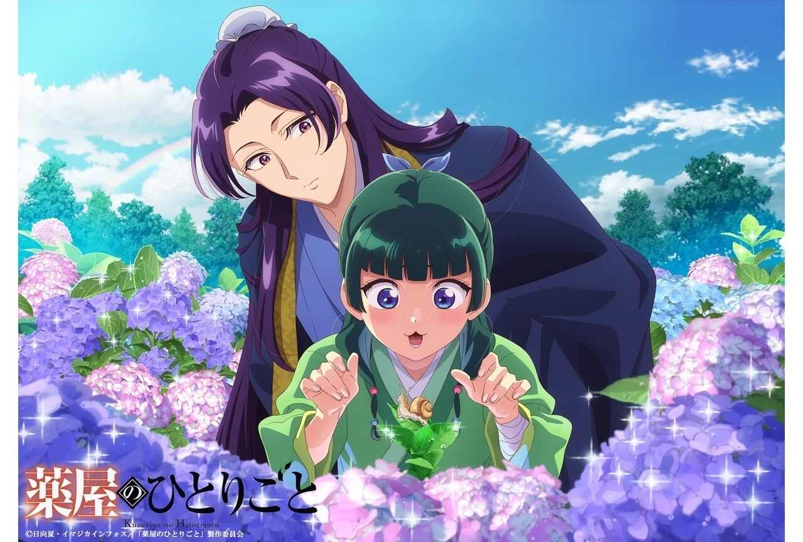
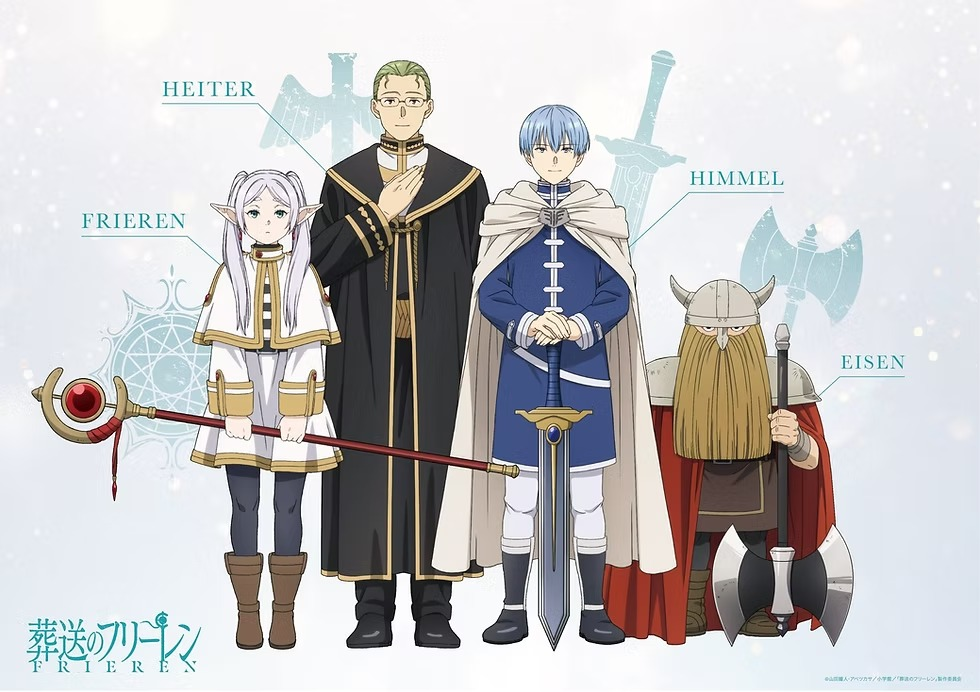

Jogos de memória
Católico
Início
Toilet Bound Hanako-kun
Diários de uma apotecária
Frieren e a jornada para o além
Spy X Family
Jogos da Memória
Escolha um anime e comece a jogar
JJBA
Toilet Bound Hanako-kun
Diários de uma apotecária
Frieren e a jornada para o além
Spy X Family

Toilet Bound Hanako-kun

Diários de uma apotecária

Frieren e a jornada para o além
Spy X Family